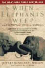
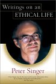
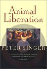
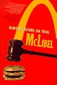
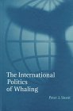

Books
Books have the ability to make us something higher, to open our mind to the thoughts of others in a way merely interacting cannot. These are books I have read and got something meaningful from, most of them have changed the way I think.
|  | When Elephants Weep : Jeffrey Moussaieff Masson |
| This is a beautiful book about the emotional lives of animals. So often in cases of oppression a line is attempted to be drawn that justifies it. For African American slaves the fact that they couldn't blush (which they could of course) meant they felt no shame and were a lesser species, for South American natives a court case was held to determine whether they were human and therefore worthy of any compassion. With animals they attempt to deny, despite every external appearance to the contrary, that they feel pain. No evidence is produced to support this, rather it is a philosophical justification to absolve cruelty. To varying degrees animals lead emotional lives, rich and varied, and this book gives a mountain of evidence against those still trying to believe it isn't true to justify their contribution to animal suffering. |
|  | Writings on an Ethical Life : Peter Singer |
| As someone who believes passionately in animal liberation, the fact that I have never gotten around to reading the ground breaking Animal Liberation by Peter Singer, was only due to slackness. To make up for this, and to get a feel for Singers other writings, I bought this book for a bargain price and proceeded to read. Singer generally tells it how it is, this book has sections on many themes, animal liberation, ethics, poverty and more. I did skip a couple of his more academic treatises, but being a book on so many topics, I guess it would be hard to enjoy them all. It will stimulate your mind, it will provoke you, it will change the way you think. |
|  | Animal Liberation : Peter Singer |
| If you read the review before this, you will realise it was written well before this one, because I have now finally gotten around to reading Animal Liberation. As fate would have it I was given two copies of the book in the same week, and not one to tempt fate I had little choice but to start reading. What an awe inspiring book this is, it contains the central ground for an ethical treatment of our fellow beings, and for this it is one of the great books. If Einstein, Da Vinci and so many other of our greatest minds were right that at some point in the future our treatment of animals will move from exploitation to compassion, history will undoubtably judge this book as a marking point in that progression. Before I read this I had already come across much of what it says, even to reading passages of it in the previous book, but I imagine if I had read this ten years ago it would have changed my life. I truly believe you are missing something of what it is to be a human involved in the world around them if you have not read this book. Humanity holds billions of animals, chained, locked, caged against their will, many of them in lives of torment, billions more are experimented on, slaughtered and tortured for our trivial whims. Purchasing the products of these industries, and your silence, are consent to that suffering. This is not consistent with the actions of someone who wishes to live an ethical life, read this book if that means anything to you. |
|
 |
McLibel - Burger Culture on Trial : John Vidal |
| The famous civil court case between the global might of the MacDonalds corporation, and two English vegetarians, is a lesson in how committed individuals can do great things. What started our with MacDonalds trying to quash public debate about their responsibility to society, turned into MacDonalds worst nightmare, an expose on their labour, animal welfare, environmental and advertising practises. With a team of high priced lawyers, flown in executives, and virtually unlimited resources they managed only the barest of victories, losing substantially on three points (animal welfare, workers rights, and advertising to children). They discovered, as many more corporations no doubt will discover, that the ideological framework they absolve their consciences with, is based more on self interest than truth. What they perhaps failed to learn was that the 'radical' opposition to their sort of corporate culture, has something worthy to teach them about themselves, something beyond profits. Great book, great read, inspiring, thoughtful, even handed (the author is no hippy radical) and a lesson in the power of individuals, which many of us need. |
|
 |
The International Politics of Whaling : Peter J. Stoett |
| After reading this book, you should find you are abreast of most of the issues surrounding whaling, and its history. It offers a reasonably even handed approach, whilst informing the reader that the blue whale has never recovered from the slaughter that went on unimpeded from the 18th to the 20th centuries, he also asks the question of how the whaling moratorium can continue when some species have made good recoveries. The only problem I see in this book is that whilst I don't believe he is wrong that whaling can be done responsibly, he doesn't seem to offer any case that it ever has been done responsibly. The Japanese, whilst brazenly lying to the entire world about the 'scientific whaling' they indulge in, have also been shown through DNA samples taken at Japanese fishing markets, to be continuing to hunt endangered whales despite the eyes of the world, and international opinion being strongly against them. Some of the quotes from the book are mind boggling - "...used declassified Soviet Ministry of Fishing reports to find that one Soviet factory ship had told the International Whaling Commission during the 1960s that it [sic] had killed 152 humpback and 156 blue whales. In fact the ship had taken 7,207 humpbacks and 1,433 blue whales and illegally killed 717 right whales, a species protected by the whaling commission since the 1930s". This is a great book for those who wish to know about whales, whaling and the politics going on in the world that will effect the future of these glorious creatures. |

|
Fast Food Nation : Eric Schlosser |
|
"What the All-American Meal is Doing to the World". This book is a land mark book, one of those I often saw quoted in cool articles, so it was inevitable that I would read it. It lived up to all my expectations. We forget that fast food is a very modern phenomenon, and the megalithic corporations they have become have had a huge impact on our way of life, our environment and our health, all in a matter of a few decades. Whilst it is called "Fast Food Nation" it ranges far beyond the burger kings and describes the ideological environment the US has embraced. It talks about MacDonalds and KFC, but it also talks about Walmart, Disney, a host of other US corporations and the industries that supply them.
MacDonalds is one of its main focuses, because their corporate practises have become a model for many other US businesses. It tells the story of how MacDonalds was started by two brothers, and they were convinced by a businessman called Ray Kroc to franchise the business. Ray Kroc enventually set up a store directly across from original MacDonalds brothers store and ran them out of business, this was how Ray Kroc worked "This is rat eat rat, dog eat dog. I'll kill em, and I'm going to kill 'em before they kill me". He hated unions and non-conformists, and actively stood in the way of reform of his industry. He had ideological brethrens in many other US corporations, one notably being Walt Disney "it's the law of the universe that the strong shall survive and the weak shall fall by the wayside, and I don't give a damn what idealistic plan is cooked up", the phenomenally successful Disney empire is discussed as well. The book also talks about the power industry has over all the background processes that make up their meals. How they have resisted better testing of meat which has cost lives, ignored concerns about the treatment of animals and workers for the sake of profit, how they have contributed to 'mega-farms' and the changing of the rural way of life, and how low paid, unstable "McJobs" are fast becoming the only ones available for many young US citizens. This is an awesome book which is hard to do justice to in a short article, it is well written, packed with wide ranging absorbing information, generally a must read. |
If there is a book you think I should read, send me the reasons why and I will see if I can get around to it. If you are really keen send it to me.
You can search and purchase books from this Amazon box...